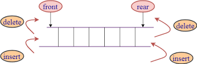
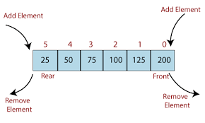

DeQueue
Operations
Insert at Front
Insert at Rear
Deque or Double Ended Queue is a type of queue in which insertion and removal of elements can either be performed from the front or the rear. Thus, it does not follow FIFO rule (First In First Out).
In addition to above operations, following operations are also supported
In DEqueue the data can be inserted and deleted at both the ends FRONT AND REAR

Step-1: [Check for overflow]
if(rear==MAX)
Print("Queue is Overflow”);
return;
Step-2: [Insert Element]
else
rear=rear+1;
q[rear]=no;
[Set rear and front pointer]
if rear=0
rear=1;
if front=0
front=1;
Step-3: return
Step-1 : [Check for the front position]
if(front <= 1)
Print("Cannot add item at the front”);
return;
Step-2 : [Insert at front]
else
front=front-1;
q[front]=no;
Step-3 : Return
Step-1 [ Check for front pointer]
if front=0
print(" Queue is Underflow”);
return;
Step-2 [Perform deletion]
else
no=q[front];
print(“Deleted element is”,no);
[Set front and rear pointer]
if front=rear
front=0;
rear=0;
else
front=front+1;
Step-3 : Return
Step-1 : [Check for the rear pointer]
if rear=0
print(“Cannot delete value at rear end”);
return;
Step-2: [ perform deletion]
else
no=q[rear];
[Check for the front and rear pointer]
if front= rear
front=0;
rear=0;
else
rear=rear-1;
print(“Deleted element is”,no);
Step-3 : Return